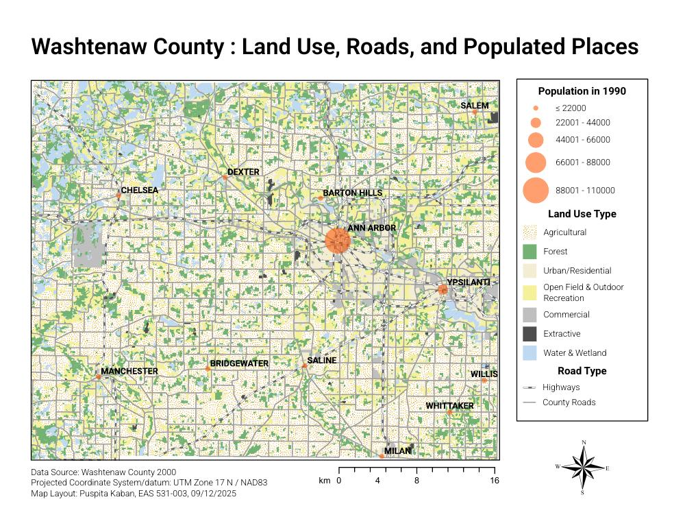
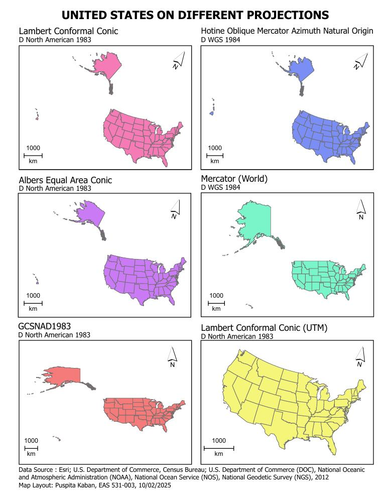
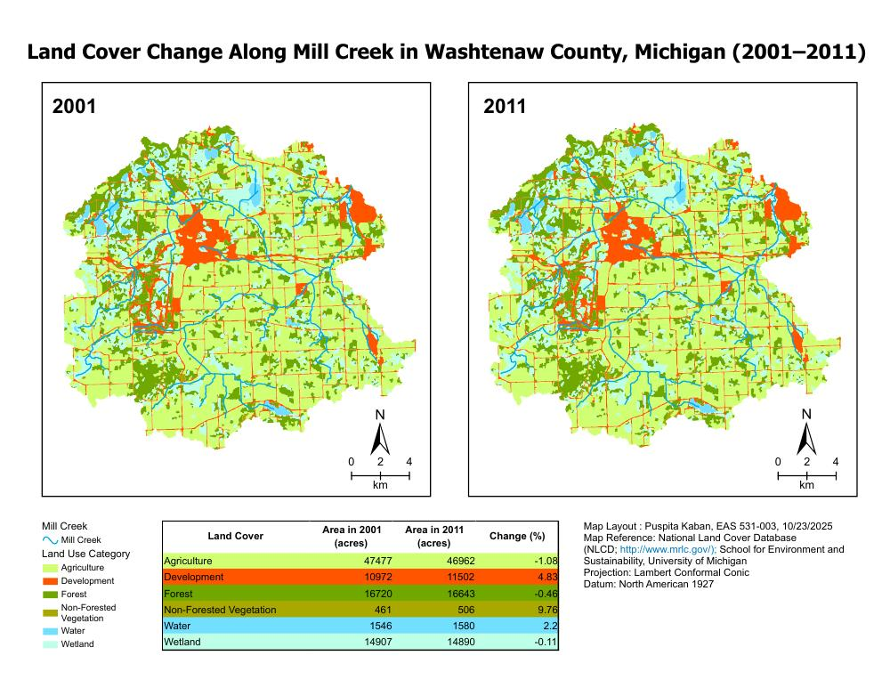
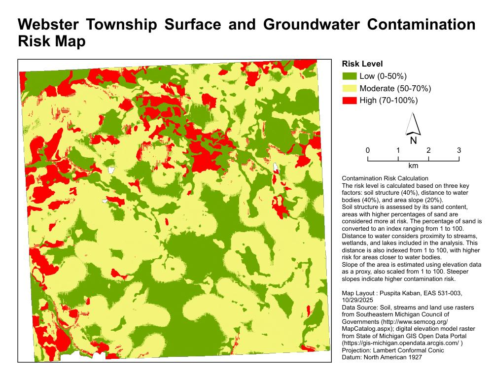
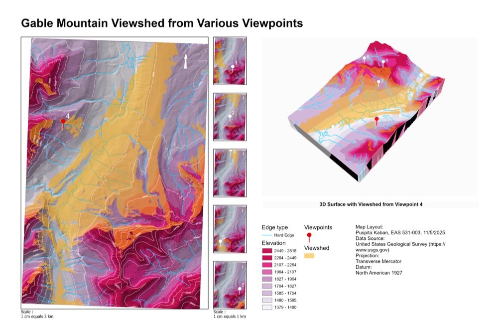
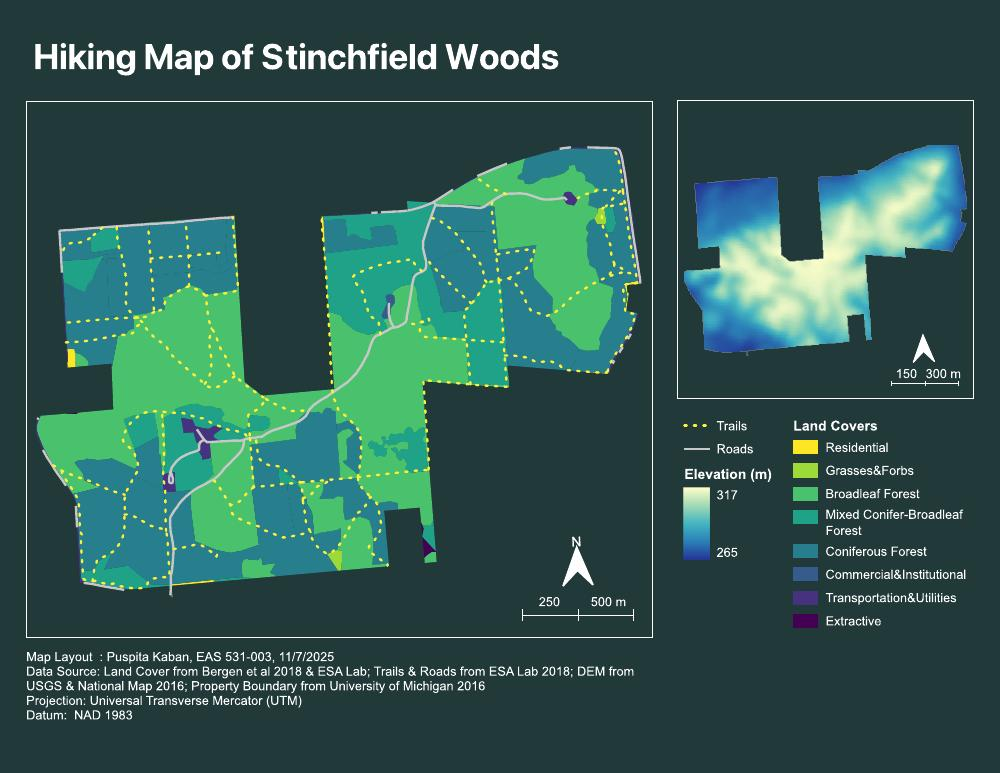
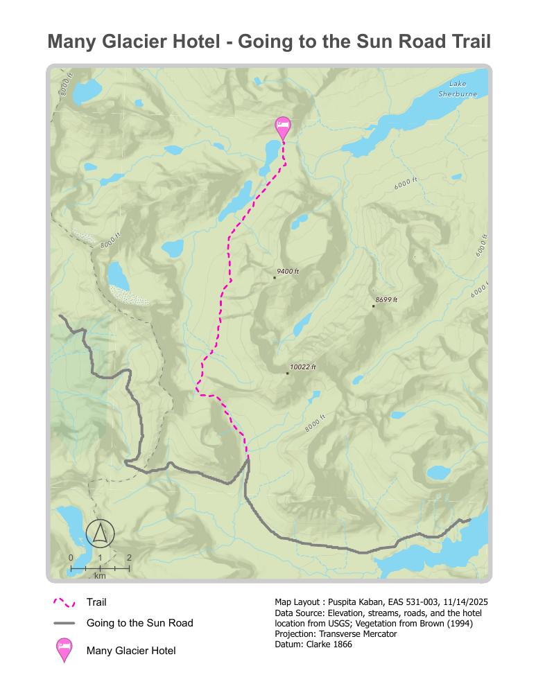
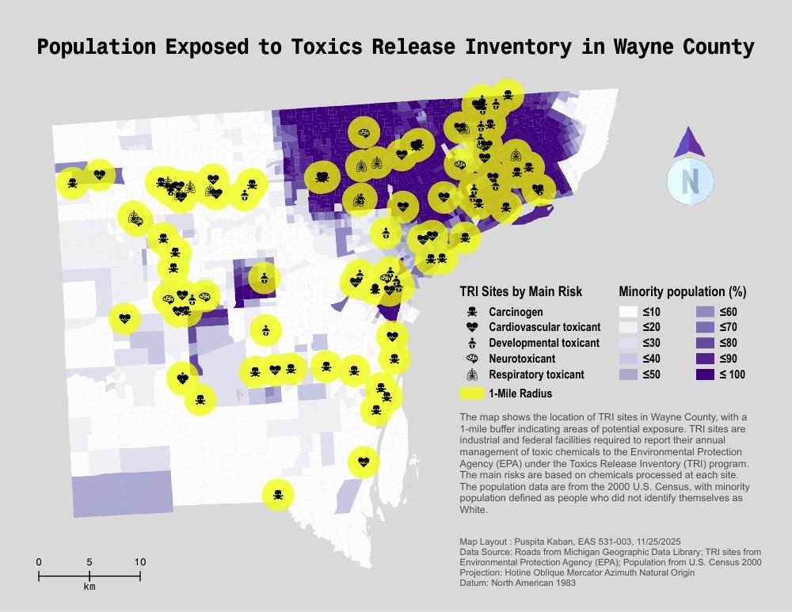
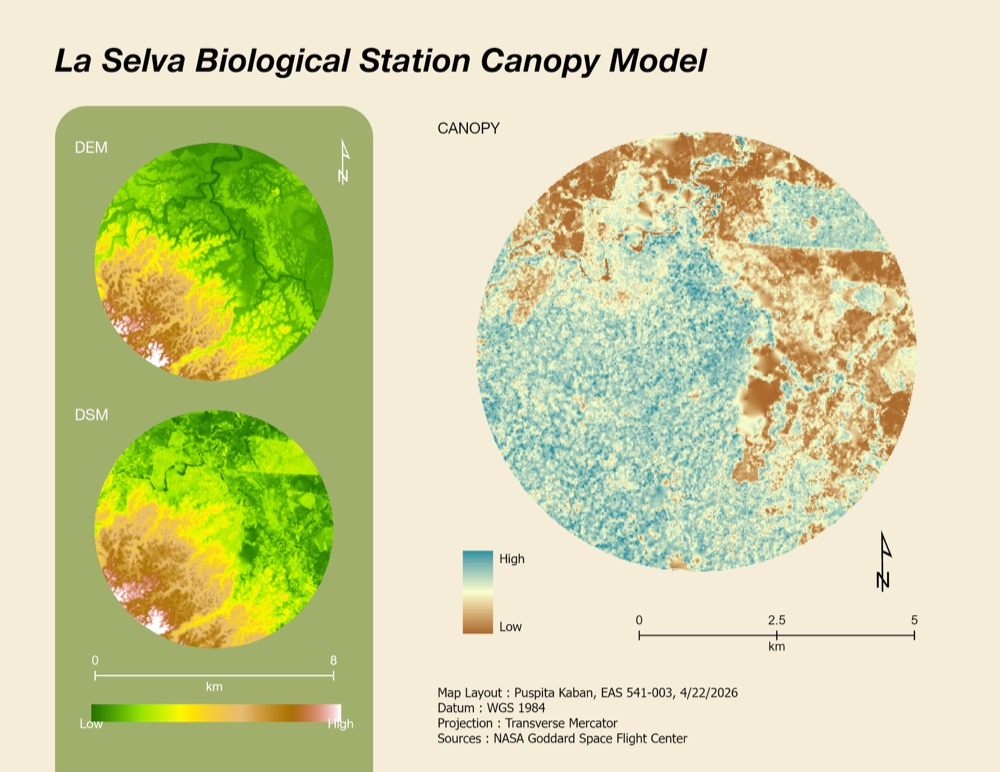

Washtenaw County: Land Use, Roads, and Populated Places

United States on Different Projections

Land Cover Change Along Mill Creek

Webster Township Contamination Risk

Gable Mountain Viewshed Analysis

Hiking Map of Stinchfield Woods

Many Glacier Hotel Trail Route

Population Exposed to Toxic Release Inventory Sites
